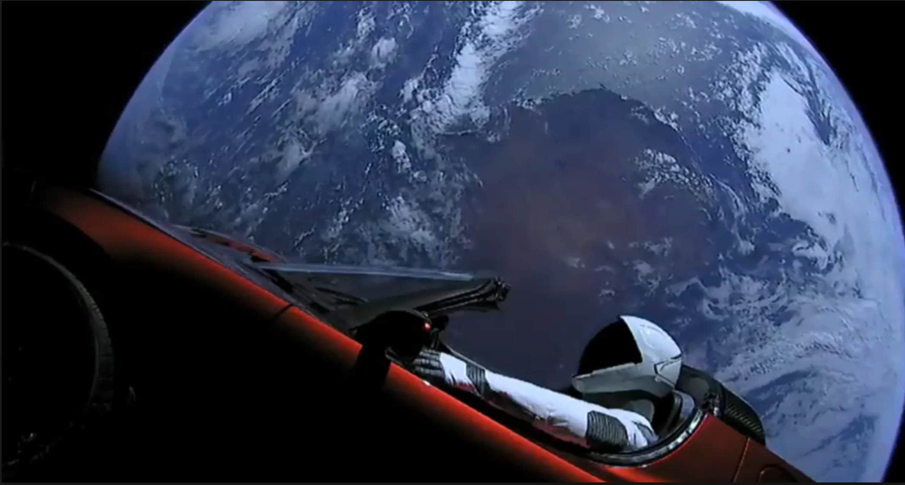

Musk, the South African business mogul and progenitor of perhaps too many companies to name, picked as the payload for the first flight of his new rocket a cherry-red Tesla convertible.
The Falcon Heavy launched from Cape Canaveral in Florida at about 3:45 pm ET on Tuesday in a history-making event. (Read more about the launch itself.) Two of the rocket’s three boosters detached and returned to Earth, touching down on landing sites nearby. The last booster wasn’t as lucky. Musk told reporters at a post-launch press conference Tuesday night that the booster missed its mark on a SpaceX drone ship in the Atlantic Ocean and hit the water going at 300 miles per hour.
The upper stage of the rocket—the bit with the Tesla in tow—made it into space. There, after a six-hour coast, the stage will restart its engine and push the Tesla into an elliptical orbit between Earth and Mars. The car will join the planets and comets and everything else in their steady march around the sun. Over time, the car’s orbit is expected to bring it closer to Mars, which is what Musk means when he says he’s sending his car to the planet.
Musk told reporters in a teleconference Monday he expects the Tesla to coast comfortably in space for hundreds of millions of years. “At times it will come extremely close to Mars,” he said. “And there’s a tiny chance that it will hit Mars. Extremely tiny.”
The Tesla is, well, not the Golden Record. Instead of a rosy time capsule of Earth and its history and inhabitants made for consumption by unknowable alien civilizations, it carries a dummy in a SpaceX space suit, and will blast David Bowie’s “Space Oddity” at top volume from its speakers. Any other payload, Musk said when he made this public in December, would have been “boring.”
The decision to make the payload a Tesla was a clever show of cross-promotional marketing that only someone like Musk is capable of. Some have groaned at the idea, describing it as nothing more than a cheesy publicity stunt for Tesla, a company facing fresh delays in production goals. And yes, the placement of a Tesla on top of a brand-new 230-foot-tall rocket with 27 engines, three times more than Musk’s flight-proven and reliable fleet of Falcon 9s, certainly helps with publicity.